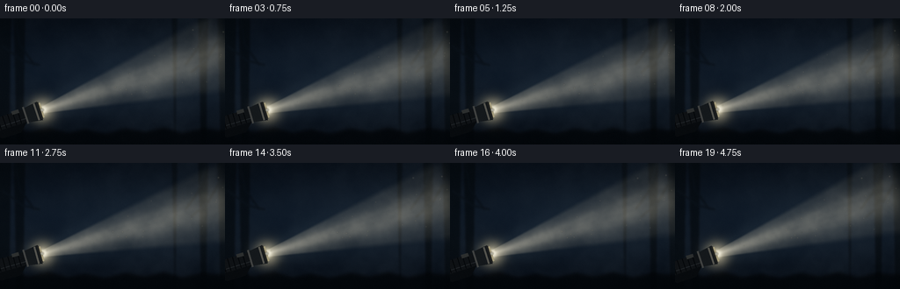
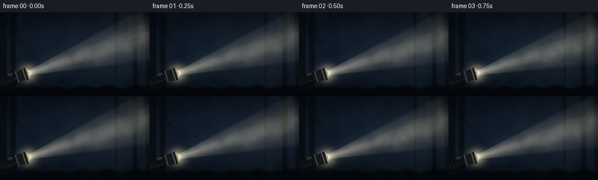

CODING AGENTS AS PIXEL WORLD MODELS
traex/GPT-5.6-Sol · phygen_054
点击播放 · 原生 RGB 像素
逐轮保存的候选
回放视频、检查图与代码变化。
每份候选均可单独播放。实际图片检查记录在下方工具轨迹中。
候选 01播放与检查图
点击播放 · 原生 RGB 像素


展开代码变化
--- 上一保存版本
+++ 本次保存版本
@@ -0,0 +1,230 @@
+from pathlib import Path
+import json
+import numpy as np
+from PIL import Image, ImageDraw, ImageFilter
+from scipy.ndimage import gaussian_filter, map_coordinates
+import artifact_io
+
+ROOT = Path(__file__).resolve().parent
+SPEC = json.loads((ROOT / "task_spec.json").read_text())
+W, H, N = SPEC["width"], SPEC["height"], SPEC["frames"]
+S = 3
+w, h = W*S, H*S
+rng = np.random.default_rng(54017)
+
+# Supersampled coordinate field.
+yy, xx = np.mgrid[0:h, 0:w].astype(np.float32)
+X, Y = xx / S, yy / S
+
+
+def smoothstep(a, b, x):
+ z = np.clip((x-a)/(b-a), 0.0, 1.0)
+ return z*z*(3.0-2.0*z)
+
+
+def texture(seed, scales=(90, 42, 19, 8), weights=(.48, .28, .16, .08)):
+ """Cloud-like seamless-ish texture, made only from filtered random fields."""
+ rr = np.random.default_rng(seed)
+ out = np.zeros((h, w), np.float32)
+ for sc, wt in zip(scales, weights):
+ # A padded field lets the frame drift without revealing boundaries.
+ noise = rr.normal(size=(h, w)).astype(np.float32)
+ layer = gaussian_filter(noise, sc*S/5.0, mode="wrap")
+ layer = (layer-layer.mean())/(layer.std()+1e-6)
+ out += wt*layer
+ out = (out-out.min())/(out.max()-out.min())
+ return out
+
+# Three independent spatial fog fields, sampled with smooth drift and blended in time.
+fog_a = texture(101)
+fog_b = texture(202, (120, 55, 24, 10), (.52,.27,.14,.07))
+fog_c = texture(303, (65, 31, 14, 6), (.44,.30,.17,.09))
+
+# Static background base: midnight blue, slightly lighter near horizon.
+horizon = np.exp(-((Y-65)/58)**2)
+base = np.zeros((h,w,3), np.float32)
+base[...,0] = 5 + 8*horizon
+base[...,1] = 10 + 14*horizon
+base[...,2] = 17 + 21*horizon
+# A very subtle vignette.
+rad = np.sqrt(((X-130)/165)**2 + ((Y-72)/105)**2)
+base *= np.clip(1.08 - .25*rad[...,None], .63, 1.0)
+
+
+def sample_shift(field, dx, dy):
+ coords = np.array([(yy-dy*S) % h, (xx-dx*S) % w])
+ return map_coordinates(field, coords, order=1, mode='wrap').astype(np.float32)
+
+
+def rgba_layer():
+ return Image.new("RGBA", (w,h), (0,0,0,0))
+
+
+def poly_points(center, direction, distances, widths):
+ d = np.asarray(direction, np.float32); n = np.array([-d[1], d[0]])
+ pts = []
+ for dist, wid in zip(distances, widths):
+ p = np.asarray(center) + d*dist + n*wid
+ pts.append(tuple(np.round(p*S).astype(int)))
+ for dist, wid in zip(distances[::-1], widths[::-1]):
+ p = np.asarray(center) + d*dist - n*wid
+ pts.append(tuple(np.round(p*S).astype(int)))
+ return pts
+
+
+def draw_background_objects(arr, t):
+ # Faint trunks and brush seen only as silhouettes through heavy mist.
+ lay = rgba_layer(); d = ImageDraw.Draw(lay)
+ trunks = [(-4, 12, 5), (16, 28, 4), (226, 236, 7), (248, 260, 5), (196, 201, 3)]
+ for x0,x1,shade in trunks:
+ d.polygon([(x0*S,0), (x1*S,0), ((x1-2)*S,h), ((x0+3)*S,h)], fill=(3,7,10,145+shade*4))
+ # Soft distant thin branches.
+ for pts in [
+ [(17,0),(22,29),(39,53)], [(235,0),(225,34),(211,53)],
+ [(252,18),(236,45),(217,62)], [(2,31),(25,48),(45,53)]]:
+ d.line([(a*S,b*S) for a,b in pts], fill=(3,7,10,115), width=2*S)
+ lay = lay.filter(ImageFilter.GaussianBlur(1.1*S))
+ rgba = np.asarray(lay).astype(np.float32)/255
+ arr[:] = arr*(1-rgba[...,3,None]) + rgba[...,:3]*255*rgba[...,3,None]
+ # Uneven near ground, dark and indistinct.
+ ground = rgba_layer(); gd = ImageDraw.Draw(ground)
+ silhouette = [(0,128),(18,126),(33,130),(55,125),(77,131),(98,127),(119,132),
+ (143,126),(165,130),(186,125),(207,131),(230,126),(256,129),(256,144),(0,144)]
+ gd.polygon([(a*S,b*S) for a,b in silhouette], fill=(2,5,8,220))
+ ground = ground.filter(ImageFilter.GaussianBlur(2.0*S))
+ g = np.asarray(ground).astype(np.float32)/255
+ arr[:] = arr*(1-g[...,3,None]) + g[...,:3]*255*g[...,3,None]
+
+
+def draw_flashlight(arr, source, direction):
+ # The body lies behind the lens (negative distances along the light direction).
+ dvec = np.asarray(direction); nvec = np.array([-dvec[1],dvec[0]])
+ lay = rgba_layer(); dr = ImageDraw.Draw(lay)
+ # A gloved hand around the tail: rounded polygon blurred only a touch.
+ hand_center = np.asarray(source)-dvec*42+nvec*7
+ hp=[]
+ for ang, rx, ry in [(0,22,12),(60,22,12),(120,22,12),(180,22,12),(240,22,12),(300,22,12)]:
+ a=np.deg2rad(ang); p=hand_center + dvec*(rx*np.cos(a)) + nvec*(ry*np.sin(a)); hp.append(tuple((p*S).astype(int)))
+ dr.polygon(hp, fill=(7,10,13,255))
+ # flashlight main barrel, subtly tapered
+ dr.polygon(poly_points(source,dvec,[-56,-17],[7.5,7.5]), fill=(14,17,20,255))
+ dr.line(poly_points(source,dvec,[-53,-20],[3.5,3.5])[:2], fill=(47,51,54,180), width=S)
+ # broad head and bezel
+ dr.polygon(poly_points(source,dvec,[-20,-3],[8.5,11.0]), fill=(20,24,27,255))
+ # Barrel grip ribs
+ for dist in [-51,-45,-39,-33,-27]:
+ p=np.asarray(source)+dvec*dist
+ a=p-nvec*7.3; b=p+nvec*7.3
+ dr.line([tuple((a*S).astype(int)),tuple((b*S).astype(int))],fill=(2,4,6,230),width=max(1,S))
+ # switch on top side
+ sw=np.asarray(source)-dvec*30-nvec*7
+ box=[]
+ for ad,an in [(-4,-2),(4,-2),(4,2),(-4,2)]:
+ p=sw+dvec*ad+nvec*an; box.append(tuple((p*S).astype(int)))
+ dr.polygon(box,fill=(45,48,48,255))
+ # metal rings
+ for dist, col, wid in [(-20,(68,70,69,255),2),(-7,(95,94,86,255),2),(-3,(31,32,30,255),2)]:
+ p=np.asarray(source)+dvec*dist
+ dr.line([tuple(((p-nvec*10)*S).astype(int)),tuple(((p+nvec*10)*S).astype(int))],fill=col,width=wid*S)
+ # Lens ellipse represented as a line perpendicular to view direction.
+ p=np.asarray(source)-dvec*1
+ dr.line([tuple(((p-nvec*8.7)*S).astype(int)),tuple(((p+nvec*8.7)*S).astype(int))],fill=(243,220,154,255),width=2*S)
+ rgba=np.asarray(lay).astype(np.float32)/255
+ arr[:] = arr*(1-rgba[...,3,None])+rgba[...,:3]*255*rgba[...,3,None]
+
+
+# Dust motes keep stable identities and move slowly with the mist.
+particles=[]
+for i in range(44):
+ particles.append((rng.uniform(48,258),rng.uniform(8,130),rng.uniform(.25,1.05),rng.uniform(0,2*np.pi),rng.uniform(.8,2.3)))
+
+frames=[]
+for fi in range(N):
+ t=fi/(N-1)
+ phase=2*np.pi*t
+ arr=base.copy()
+
+ # Atmospheric fog before the flashlight: multiple layers advect at different speeds.
+ fa=sample_shift(fog_a, 11*t, 1.7*np.sin(phase*.55))
+ fb=sample_shift(fog_b, -7*t, 2.5*t)
+ fc=sample_shift(fog_c, 18*t, -2.0*t)
+ fog=np.clip(.48*fa+.34*fb+.18*fc,0,1)
+ # Thick blue-grey mist gives the scene depth without flattening it completely.
+ density=np.clip((fog-.28)*.86,0,.64) * (.72+.28*smoothstep(10,112,Y))
+ fog_col=np.stack([30+7*fog,39+10*fog,49+13*fog],axis=-1)
+ arr=arr*(1-density[...,None])+fog_col*density[...,None]
+ draw_background_objects(arr,t)
+
+ # A gentle, continuous hand-held sweep, avoiding artificial camera motion.
+ source=np.array([48.0+0.45*np.sin(phase*.7), 104.0+0.6*np.sin(phase*.8+1.2)])
+ angle=np.deg2rad(-17.1 + 1.55*np.sin(phase*.72-.45) + .25*np.sin(phase*1.9))
+ dvec=np.array([np.cos(angle),np.sin(angle)],np.float32)
+ nvec=np.array([-dvec[1],dvec[0]],np.float32)
+ vx=X-source[0]; vy=Y-source[1]
+ axial=vx*dvec[0]+vy*dvec[1]
+ lateral=vx*nvec[0]+vy*nvec[1]
+ halfw=4.2 + .205*np.maximum(axial,0)
+ edge=1-smoothstep(.78,1.04,np.abs(lateral)/(halfw+1e-4))
+ forward=smoothstep(-1.5,4.0,axial)*smoothstep(236,203,axial)
+ cone=edge*forward
+
+ # Volumetric scattering: mist density lights up, with a bright core and longitudinal falloff.
+ beam_fog=np.clip(.36+.86*fog+.22*fc,0,1.45)
+ core=np.exp(-0.5*(lateral/(2.0+.31*halfw))**2)
+ attenuation=np.exp(-np.maximum(axial,0)/290.0)
+ beam=(.23+.77*core)*cone*attenuation*beam_fog
+ # Soft outer bloom around cone edge, stronger near source.
+ outer=np.exp(-0.5*(lateral/(halfw*1.09+4.0))**4)*forward*attenuation
+ outer*=smoothstep(0,18,axial)
+
+ warm=np.array([255,236,190],np.float32)
+ cool=np.array([118,146,159],np.float32)
+ # Screen-like additive scattering, preserving visible mist texture.
+ arr += outer[...,None]*cool*.065
+ arr += beam[...,None]*warm*.52
+
+ # Fine optical shafts within the cone, only subtly visible and broken by fog.
+ ray=0
+ for offset,widthr,strength in [(-.070,.012,.20),(-.020,.009,.16),(.034,.014,.18),(.077,.011,.10)]:
+ line_lat=lateral-offset*axial
+ ray += strength*np.exp(-.5*(line_lat/(1.0+widthr*np.maximum(axial,0)))**2)
+ ray *= cone*attenuation*(.38+.62*fog)
+ arr += ray[...,None]*np.array([255,239,196])*.34
+
+ # Concentrated emission and lens bloom at the origin.
+ dist=np.hypot(X-source[0],Y-source[1])
+ glow=np.exp(-(dist/12.5)**2)*.78 + np.exp(-(dist/4.2)**2)*1.7
+ arr += glow[...,None]*np.array([255,231,167])
+
+ # Draw the opaque flashlight after the light volume, keeping the emitter at the bezel.
+ draw_flashlight(arr,source,dvec)
+
+ # Bright lens face and drifting illuminated droplets/dust in the cone.
+ p_layer=rgba_layer(); pd=ImageDraw.Draw(p_layer)
+ # lens hotspot
+ sx,sy=(source*S).astype(int)
+ r=2*S
+ pd.ellipse((sx-r,sy-r,sx+r,sy+r),fill=(255,249,215,245))
+ for i,(px,py,pr,ph,spd) in enumerate(particles):
+ qx=px-4.5*t*spd
+ qy=py+1.6*np.sin(ph+phase*(.35+.04*i))+1.2*t
+ vv=np.array([qx-source[0],qy-source[1]])
+ aa=vv@dvec; ll=vv@nvec; hw=4.2+.205*max(aa,0)
+ if aa>3 and aa<235 and abs(ll)<hw*.88:
+ opacity=int(np.clip(35+80*(1-abs(ll)/hw)*(1-aa/310),18,105))
+ rr=max(1,int(pr*S))
+ pd.ellipse((int(qx*S)-rr,int(qy*S)-rr,int(qx*S)+rr,int(qy*S)+rr),fill=(255,245,210,opacity))
+ p_layer=p_layer.filter(ImageFilter.GaussianBlur(.55*S))
+ pp=np.asarray(p_layer).astype(np.float32)/255
+ arr=arr*(1-pp[...,3,None])+pp[...,:3]*255*pp[...,3,None]
+
+ # Filmic shoulder, faint fine grain, and high quality downsampling.
+ arr=255*(1-np.exp(-np.clip(arr,0,None)/235.0))
+ grain=np.random.default_rng(9000+fi).normal(0,1.15,(h,w,1))
+ arr=np.clip(arr+grain,0,255).astype(np.uint8)
+ im=Image.fromarray(arr,"RGB").resize((W,H),Image.Resampling.LANCZOS)
+ frames.append(np.asarray(im,dtype=np.uint8))
+
+frames=np.stack(frames)
+artifact_io.save(frames,ROOT)
+print(f"saved {frames.shape} RGB video; range={frames.min()}..{frames.max()}, mean={frames.mean():.2f}")
可观测工具轨迹
实际执行的命令与返回图片。
命令 1exit 0
/bin/bash -lc "ls -la && printf '\\n--- prompt.txt ---\\n' && cat prompt.txt && printf '\\n--- GENERATION_RULES.md ---\\n' && cat GENERATION_RULES.md && printf '\\n--- task_spec.json ---\\n' && cat task_spec.json"
命令 2exit 0
/bin/bash -lc "find . -maxdepth 2 -type f -printf '%p\\n' | sort"
命令 3exit 0
/bin/bash -lc "sed -n '1,240p' artifact_io.py && python - <<'PY'
try:
import PIL; print('PIL',PIL.__version__)
except Exception as e: print(e)
try:
import scipy; print('scipy',scipy.__version__)
except Exception as e: print(e)
PY"命令 4exit 0
/bin/bash -lc "cat > generate.py <<'PY'
from pathlib import Path
import json
import numpy as np
from PIL import Image, ImageDraw, ImageFilter
from scipy.ndimage import gaussian_filter, map_coordinates
import artifact_io
ROOT = Path(__file__).resolve().parent
SPEC = json.loads((ROOT / \"task_spec.json\").read_text())
W, H, N = SPEC[\"width\"], SPEC[\"height\"], SPEC[\"frames\"]
S = 3
w, h = W*S, H*S
rng = np.random.default_rng(54017)
# Supersampled coordinate field.
yy, xx = np.mgrid[0:h, 0:w].astype(np.float32)
X, Y = xx / S, yy / S
def smoothstep(a, b, x):
z = np.clip((x-a)/(b-a), 0.0, 1.0)
return z*z*(3.0-2.0*z)
def texture(seed, scales=(90, 42, 19, 8), weights=(.48, .28, .16, .08)):
\"\"\"Cloud-like seamless-ish texture, made only from filtered random fields.\"\"\"
rr = np.random.default_rng(seed)
out = np.zeros((h, w), np.float32)
for sc, wt in zip(scales, weights):
# A padded field lets the frame drift without revealing boundaries.
noise = rr.normal(size=(h, w)).astype(np.float32)
layer = gaussian_filter(noise, sc*S/5.0, mode=\"wrap\")
layer = (layer-layer.mean())/(layer.std()+1e-6)
out += wt*layer
out = (out-out.min())/(out.max()-out.min())
return out
# Three independent spatial fog fields, sampled with smooth drift and blended in time.
fog_a = texture(101)
fog_b = texture(202, (120, 55, 24, 10), (.52,.27,.14,.07))
fog_c = texture(303, (65, 31, 14, 6), (.44,.30,.17,.09))
# Static background base: midnight blue, slightly lighter near horizon.
horizon = np.exp(-((Y-65)/58)**2)
base = np.zeros((h,w,3), np.float32)
base[...,0] = 5 + 8*horizon
base[...,1] = 10 + 14*horizon
base[...,2] = 17 + 21*horizon
# A very subtle vignette.
rad = np.sqrt(((X-130)/165)**2 + ((Y-72)/105)**2)
base *= np.clip(1.08 - .25*rad[...,None], .63, 1.0)
def sample_shift(field, dx, dy):
coords = np.array([(yy-dy*S) % h, (xx-dx*S) % w])
return map_coordinates(field, coords, order=1, mode='wrap').astype(np.float32)
def rgba_layer():
return Image.new(\"RGBA\", (w,h), (0,0,0,0))
def poly_points(center, direction, distances, widths):
d = np.asarray(direction, np.float32); n = np.array([-d[1], d[0]])
pts = []
for dist, wid in zip(distances, widths):
p = np.asarray(center) + d*dist + n*wid
pts.append(tuple(np.round(p*S).astype(int)))
for dist, wid in zip(distances[::-1], widths[::-1]):
p = np.asarray(center) + d*dist - n*wid
pts.append(tuple(np.round(p*S).astype(int)))
return pts
def draw_background_objects(arr, t):
# Faint trunks and brush seen only as silhouettes through heavy mist.
lay = rgba_layer(); d = ImageDraw.Draw(lay)
trunks = [(-4, 12, 5), (16, 28, 4), (226, 236, 7), (248, 260, 5), (196, 201, 3)]
for x0,x1,shade in trunks:
d.polygon([(x0*S,0), (x1*S,0), ((x1-2)*S,h), ((x0+3)*S,h)], fill=(3,7,10,145+shade*4))
# Soft distant thin branches.
for pts in [
[(17,0),(22,29),(39,53)], [(235,0),(225,34),(211,53)],
[(252,18),(236,45),(217,62)], [(2,31),(25,48),(45,53)]]:
d.line([(a*S,b*S) for a,b in pts], fill=(3,7,10,115), width=2*S)
lay = lay.filter(ImageFilter.GaussianBlur(1.1*S))
rgba = np.asarray(lay).astype(np.float32)/255
arr[:] = arr*(1-rgba[...,3,None]) + rgba[...,:3]*255*rgba[...,3,None]
# Uneven near ground, dark and indistinct.
ground = rgba_layer(); gd = ImageDraw.Draw(ground)
silhouette = [(0,128),(18,126),(33,130),(55,125),(77,131),(98,127),(119,132),
(143,126),(165,130),(186,125),(207,131),(230,126),(256,129),(256,144),(0,144)]
gd.polygon([(a*S,b*S) for a,b in silhouette], fill=(2,5,8,220))
ground = ground.filter(ImageFilter.GaussianBlur(2.0*S))
g = np.asarray(ground).astype(np.float32)/255
arr[:] = arr*(1-g[...,3,None]) + g[...,:3]*255*g[...,3,None]
def draw_flashlight(arr, source, direction):
# The body lies behind the lens (negative distances along the light direction).
dvec = np.asarray(direction); nvec = np.array([-dvec[1],dvec[0]])
lay = rgba_layer(); dr = ImageDraw.Draw(lay)
# A gloved hand around the tail: rounded polygon blurred only a touch.
hand_center = np.asarray(source)-dvec*42+nvec*7
hp=[]
for ang, rx, ry in [(0,22,12),(60,22,12),(120,22,12),(180,22,12),(240,22,12),(300,22,12)]:
a=np.deg2rad(ang); p=hand_center + dvec*(rx*np.cos(a)) + nvec*(ry*np.sin(a)); hp.append(tuple((p*S).astype(int)))
dr.polygon(hp, fill=(7,10,13,255))
# flashlight main barrel, subtly tapered
dr.polygon(poly_points(source,dvec,[-56,-17],[7.5,7.5]), fill=(14,17,20,255))
dr.line(poly_points(source,dvec,[-53,-20],[3.5,3.5])[:2], fill=(47,51,54,180), width=S)
# broad head and bezel
dr.polygon(poly_points(source,dvec,[-20,-3],[8.5,11.0]), fill=(20,24,27,255))
# Barrel grip ribs
for dist in [-51,-45,-39,-33,-27]:
p=np.asarray(source)+dvec*dist
a=p-nvec*7.3; b=p+nvec*7.3
dr.line([tuple((a*S).astype(int)),tuple((b*S).astype(int))],fill=(2,4,6,230),width=max(1,S))
# switch on top side
sw=np.asarray(source)-dvec*30-nvec*7
box=[]
for ad,an in [(-4,-2),(4,-2),(4,2),(-4,2)]:
p=sw+dvec*ad+nvec*an; box.append(tuple((p*S).astype(int)))
dr.polygon(box,fill=(45,48,48,255))
# metal rings
for dist, col, wid in [(-20,(68,70,69,255),2),(-7,(95,94,86,255),2),(-3,(31,32,30,255),2)]:
p=np.asarray(source)+dvec*dist
dr.line([tuple(((p-nvec*10)*S).astype(int)),tuple(((p+nvec*10)*S).astype(int))],fill=col,width=wid*S)
# Lens ellipse represented as a line perpendicular to view direction.
p=np.asarray(source)-dvec*1
dr.line([tuple(((p-nvec*8.7)*S).astype(int)),tuple(((p+nvec*8.7)*S).astype(int))],fill=(243,220,154,255),width=2*S)
rgba=np.asarray(lay).astype(np.float32)/255
arr[:] = arr*(1-rgba[...,3,None])+rgba[...,:3]*255*rgba[...,3,None]
# Dust motes keep stable identities and move slowly with the mist.
particles=[]
for i in range(44):
particles.append((rng.uniform(48,258),rng.uniform(8,130),rng.uniform(.25,1.05),rng.uniform(0,2*np.pi),rng.uniform(.8,2.3)))
frames=[]
for fi in range(N):
t=fi/(N-1)
phase=2*np.pi*t
arr=base.copy()
# Atmospheric fog before the flashlight: multiple layers advect at different speeds.
fa=sample_shift(fog_a, 11*t, 1.7*np.sin(phase*.55))
fb=sample_shift(fog_b, -7*t, 2.5*t)
fc=sample_shift(fog_c, 18*t, -2.0*t)
fog=np.clip(.48*fa+.34*fb+.18*fc,0,1)
# Thick blue-grey mist gives the scene depth without flattening it completely.
density=np.clip((fog-.28)*.86,0,.64) * (.72+.28*smoothstep(10,112,Y))
fog_col=np.stack([30+7*fog,39+10*fog,49+13*fog],axis=-1)
arr=arr*(1-density[...,None])+fog_col*density[...,None]
draw_background_objects(arr,t)
# A gentle, continuous hand-held sweep, avoiding artificial camera motion.
source=np.array([48.0+0.45*np.sin(phase*.7), 104.0+0.6*np.sin(phase*.8+1.2)])
angle=np.deg2rad(-17.1 + 1.55*np.sin(phase*.72-.45) + .25*np.sin(phase*1.9))
dvec=np.array([np.cos(angle),np.sin(angle)],np.float32)
nvec=np.array([-dvec[1],dvec[0]],np.float32)
vx=X-source[0]; vy=Y-source[1]
axial=vx*dvec[0]+vy*dvec[1]
lateral=vx*nvec[0]+vy*nvec[1]
halfw=4.2 + .205*np.maximum(axial,0)
edge=1-smoothstep(.78,1.04,np.abs(lateral)/(halfw+1e-4))
forward=smoothstep(-1.5,4.0,axial)*smoothstep(236,203,axial)
cone=edge*forward
# Volumetric scattering: mist density lights up, with a bright core and longitudinal falloff.
beam_fog=np.clip(.36+.86*fog+.22*fc,0,1.45)
core=np.exp(-0.5*(lateral/(2.0+.31*halfw))**2)
attenuation=np.exp(-np.maximum(axial,0)/290.0)
beam=(.23+.77*core)*cone*attenuation*beam_fog
# Soft outer bloom around cone edge, stronger near source.
outer=np.exp(-0.5*(lateral/(halfw*1.09+4.0))**4)*forward*attenuation
outer*=smoothstep(0,18,axial)
warm=np.array([255,236,190],np.float32)
cool=np.array([118,146,159],np.float32)
# Screen-like additive scattering, preserving visible mist texture.
arr += outer[...,None]*cool*.065
arr += beam[...,None]*warm*.52
# Fine optical shafts within the cone, only subtly visible and broken by fog.
ray=0
for offset,widthr,strength in [(-.070,.012,.20),(-.020,.009,.16),(.034,.014,.18),(.077,.011,.10)]:
line_lat=lateral-offset*axial
ray += strength*np.exp(-.5*(line_lat/(1.0+widthr*np.maximum(axial,0)))**2)
ray *= cone*attenuation*(.38+.62*fog)
arr += ray[...,None]*np.array([255,239,196])*.34
# Concentrated emission and lens bloom at the origin.
dist=np.hypot(X-source[0],Y-source[1])
glow=np.exp(-(dist/12.5)**2)*.78 + np.exp(-(dist/4.2)**2)*1.7
arr += glow[...,None]*np.array([255,231,167])
# Draw the opaque flashlight after the light volume, keeping the emitter at the bezel.
draw_flashlight(arr,source,dvec)
# Bright lens face and drifting illuminated droplets/dust in the cone.
p_layer=rgba_layer(); pd=ImageDraw.Draw(p_layer)
# lens hotspot
sx,sy=(source*S).astype(int)
r=2*S
pd.ellipse((sx-r,sy-r,sx+r,sy+r),fill=(255,249,215,245))
for i,(px,py,pr,ph,spd) in enumerate(particles):
qx=px-4.5*t*spd
qy=py+1.6*np.sin(ph+phase*(.35+.04*i))+1.2*t
vv=np.array([qx-source[0],qy-source[1]])
aa=vv@dvec; ll=vv@nvec; hw=4.2+.205*max(aa,0)
if aa>3 and aa<235 and abs(ll)<hw*.88:
opacity=int(np.clip(35+80*(1-abs(ll)/hw)*(1-aa/310),18,105))
rr=max(1,int(pr*S))
pd.ellipse((int(qx*S)-rr,int(qy*S)-rr,int(qx*S)+rr,int(qy*S)+rr),fill=(255,245,210,opacity))
p_layer=p_layer.filter(ImageFilter.GaussianBlur(.55*S))
pp=np.asarray(p_layer).astype(np.float32)/255
arr=arr*(1-pp[...,3,None])+pp[...,:3]*255*pp[...,3,None]
# Filmic shoulder, faint fine grain, and high quality downsampling.
arr=255*(1-np.exp(-np.clip(arr,0,None)/235.0))
grain=np.random.default_rng(9000+fi).normal(0,1.15,(h,w,1))
arr=np.clip(arr+grain,0,255).astype(np.uint8)
im=Image.fromarray(arr,\"RGB\").resize((W,H),Image.Resampling.LANCZOS)
frames.append(np.asarray(im,dtype=np.uint8))
frames=np.stack(frames)
artifact_io.save(frames,ROOT)
print(f\"saved {frames.shape} RGB video; range={frames.min()}..{frames.max()}, mean={frames.mean():.2f}\")
PY
python generate.py"命令 5exit 0
/bin/bash -lc "python - <<'PY'
import numpy as np
from PIL import Image
z=np.load('pixels.npz')['pixels']
assert z.shape==(144,256,20) and z.dtype==np.uint32
ims=np.stack([np.asarray(Image.open(f'frames/{i:02d}.png').convert('RGB')) for i in range(20)])
assert ims.shape==(20,144,256,3) and ims.dtype==np.uint8
print('pixels:',z.shape,z.dtype)
print('frames:',ims.shape,ims.dtype)
print('mean absolute adjacent change:',np.abs(np.diff(ims.astype(float),axis=0)).mean())
print('frame luminance means:',np.round(ims.mean((1,2,3)),2))
print('artifacts:')
PY
ls -lh pixels.npz index.html inspection.png transition_check.png frames/00.png frames/19.png generate.py"命令 6exit 0
/bin/bash -lc "python - <<'PY'
from PIL import Image
import numpy as np
im=np.asarray(Image.open('frames/10.png').convert('RGB')).mean(2)
chars=' .:-=+*#%@'
# crop 4x4 average and map fixed brightness 0-160
for y in range(0,144,6):
print(''.join(chars[min(9,int(im[y:y+6,x:x+4].mean()/18))] for x in range(0,256,4)))
PY"保存候选 1 份；完成命令 6 次；可验证图片返回 0 张。原始 API 响应与完整日志保留在本地。